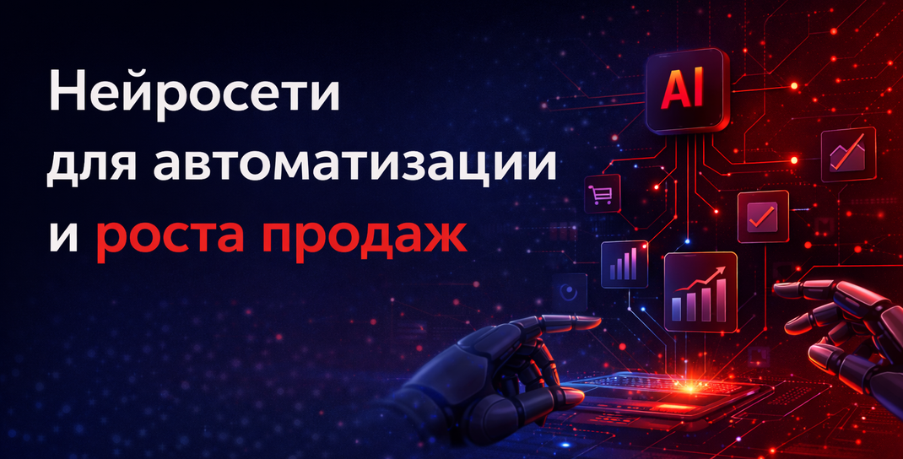

С помощью нейросетей можно анализировать поведение пользователей сайта или сервиса для оптимизации конверсии, что тоже способствует росту количества продаж. Читайте подробнее в нашей статье
Нейросети предлагают много решений для достижения ваших целей. Например, они могут анализировать данные клиентов для определения их предпочтений, чтобы предлагать то, что требуется клиенту. С помощью нейросетей можно анализировать поведение пользователей сайта или сервиса для оптимизации конверсии, что тоже способствует росту количества продаж. А еще нейронные сети могут помочь в оптимизации ценообразования, предлагая наиболее прибыльные стратегии для каждого сегмента рынка.
Искусственный интеллект (ИИ) — это область компьютерных наук и робототехники, которая занимается разработкой интеллектуальных систем, способных выполнять задачи, требующие человеческого интеллекта. Такие системы могут быть основаны на различных технологиях, включая нейронные сети, экспертные системы, машинное обучение и глубокое обучение. В бизнесе ИИ может использоваться для управления финансовыми рисками или повышения эффективности производства и рекомендации товаров в интернет-магазинах, увеличения продаж. Одним из преимуществ ИИ является возможность анализа большого количества информации и быстрое принятие решений в условиях неопределенности.
Нейросети работают путем обработки больших объемов данных с использованием алгоритмов машинного обучения. Каждый элемент нейросети обрабатывает свой кусочек информации, а затем передает результат следующему слою нейронов. Таким образом, нейросеть обучается на данных и может предсказывать поведение системы или человека на основе этих данных.
Нейронные сети имеют множество плюсов, а вот основные:
Процесс продаж с помощью нейронных сетей можно разделить на этапы:
Персонализация общения — это процесс, при котором общение между людьми учитывает их индивидуальные особенности, интересы и предпочтения. Она может включать в себя использование личных обращений, обсуждение общих интересов, учет эмоционального состояния собеседника и прочее. Персонализация общения помогает установить более тесную связь с собеседником. Это важный инструмент для улучшения коммуникации, который требует тщательного подхода и учета возможных последствий, с чем очень поможет ИИ.
С помощью нейронных сетей можно автоматизировать множество процессов, таких как:
Применение ИИ для анализа поведения лидов и генерации персональных предложений включает использование чат-ботов и других технологий для быстрой и точной реакции на запросы и вопросы лидов. Анализ и оптимизация процессов работы с лидами поможет улучшить работу с каждым лидом, а также снизить затраты на привлечение потенциальных покупателей.
В основе скоринга лежит анализ данных о поведении пользователей, их интересах, демографических характеристиках и других факторах, которые могут повлиять на вероятность совершения покупки. Скоринг лидов помогает получить информацию и выявить наиболее перспективные сегменты аудитории и определить наиболее эффективные каналы привлечения покупателей. Это позволит компании сделать ставку на наиболее эффективные каналы привлечения и снизить затраты на маркетинг.
Воронка продаж представляет собой стадии, через которые проходит клиент от первого взаимодействия с компанией до покупки. Сначала ИИ составляет портрет потенциального клиента, затем привлекает его внимание. Далее, заинтересуйте его, позвольте оценить предложенный товар или услугу, подтолкните к принятию решения о покупке и, собственно, завершающий этап — покупка.
Для того чтобы построить результативную воронку продаж с помощью нейросети, необходимо учитывать совокупность данных, таких как особенности продукта или услуги, целевая аудитория, конкуренты, маркетинговая стратегия. Важно также обрабатывать результаты на каждой стадии, чтобы выявлять слабые места и корректировать процесс продаж.
Есть много программ и сервисов, которые позволяют создавать тексты различной сложности и объема, например, ChatGPT, Яндекс GPT, LLaMA. Использование искусственного интеллекта для написания текстов позволяет существенно сократить время на создание контента, практически не снижая его качество. Однако следует учитывать, что не все тексты, созданные ИИ, могут быть полностью оригинальными и качественными, поэтому их следует проверять на плагиат и редактировать при необходимости.
На основе данных о клиентах, конкурентах, конверсиях и просмотрах нейросеть может предсказать будущие продажи, определить наиболее развивающиеся направления и предложить оптимальные маркетинговые стратегии. Для получения точных прогнозов и роста продаж необходимо правильно настроить нейросеть, обеспечить ее достаточным объемом данных и регулярно обновлять данные для учета изменений на рынке.
ИИ позволяет автоматизировать процесс учета товаров на складе, формировать отчеты и анализировать данные. С помощью ИИ можно создавать модели прогнозирования потребностей в товарах на основе анализа истории продаж и других данных.
ИИ помогает оптимизировать складские операции, планировать размещение товаров и определять наиболее эффективные способы доставки товаров клиентам. Кроме того, ИИ может использоваться для анализа данных о продажах и определения наиболее прибыльных товаров. Это позволяет компаниям более эффективно управлять своими ресурсами и увеличивать прибыль.
Нейросети помогают автоматизировать процессы обработки обращений клиентов, ответы на вопросы, предоставление рекомендаций, классифицировать обращения клиентов по различным категориям, что позволяет более эффективно распределять ресурсы компании на обработку запросов. Нейронные сети помогут проанализировать отзывы клиентов и определить их удовлетворенность качеством обслуживания.
ИИ может использоваться для обработки информации о потребителях, конкурентах, товарах и многом другом, предоставляя ценную информацию о динамике рынка. Также он полезен для прогнозирования спроса и предложения, что поможет предприятиям принимать решения о производстве, закупках и ценообразовании. ИИ поможет определить оптимальные каналы сбыта и методы продвижения, учитывая предпочтения и поведение потребителей.
Кроме того, использование нейросетей для бизнеса способствует обнаружению аномалий в данных, что может помочь компаниям быстро реагировать на изменения в спросе. Однако важно помнить, что использование нейросетей для анализа рынка требует тщательной подготовки данных и настройки алгоритмов, а также регулярного мониторинга и обновления моделей. Без должного внимания к качеству данных и процессу анализа получить качественные результаты вряд ли получится — они могут оказаться неточными и вводить в заблуждение.
Выбор нейросети для использования в отделе продаж зависит от конкретных задач, которые нужно решить. Вот несколько вариантов лучших нейросети в 2025 году:
VoxFlowAI помогает внедрять AI-решения для бизнеса: автоматизировать коммуникацию с клиентами, усиливать продажи и строить современные цифровые процессы. Посмотреть решения VoxFlowAI или оставить заявку на консультацию.